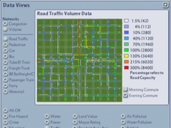

The NAM's Data View plugin options contain an improved version of the Traffic Volume View that comes with the game, and which can be found under Data Views. They also contains improved versions of the Subway View, Subway Building View, and Zones View, designed to make the process of building Subways and Transit Stations less error-prone.

This Traffic Volume View offers a number of improvements to the one included with the game. Rather than the seven shades of blue in the original,
this version uses the full spectrum of color, including approximately 48 distinct color shades. The maximum volume shown for each travel type has been increased from a flat
1200 for all types in the original Traffic Volume View to a value which is 300% of the capacity of the underlying network for the selected travel type.
(Since only one commute period is shown at a time, this is one half of the standard network capacity, which is calculated for a full day.) The legend has been increased from five to nine entries,
and each color in the legend is followed by the percentage of the underlying network capacity that that color represents, as well as the actual number of Sims represented by that percentage.
When a travel type may have more than one underlying network (e.g., cars may travel on streets, roads, or highways), a subtext below the legend indicates which network is
being referenced in the display.
The colors in the display have been arranged so that they are more concentrated at lower levels, in order to give finer granularity at lower volumes. Between volumes of 0% and 10%,
colors change about every 1.5%. Between 10% and 130%, colors change about ever 5%. And between 130% and 300%, colors change about every 10%. Please note that while every attempt has
been made to attain the greatest accuracy possible, all numbers are somewhat approximate. The numbers following each color in the legend refer to the approximate beginning of the range of that particular color.
You may notice that starting at 100%, the colors follow those in the Traffic Congestion View. However, it is important to keep in mind the difference between theTraffic Congestion View
and the Traffic Volume View. The Congestion View is compiled from an entire day's travel statistics, while the Volume View refers to only a single commute period. Therefore, yellow in a
single volume view does not necessarily indicate congestion, and blue or green in a single volume view does not necessarily indicate lack of congestion. Furthermore, some of the volume views include
non-congestion producing travel types, which are pedestrians, buses, and ferries. An experienced player may be able to look at both commute periods of certain volume views and get a good
idea of congestion, but it is necessary to be careful here.
The Traffic Volume View also includes a new Subway View. The new Subway View acts in most ways like the normal underground Subway View, which is entered by selecting the
Subway Tool when you want to build or demolish subways. However, it has included in it the volume display feature of the Traffic Volume View, which allows you to see the usage of your subways
as you are building (or demolishing) them. Like the rest of the Traffic Volume View, this view shows the volume of traffic in each subway line visible in the main map, as well as in all
subway lines in the minimap.
The last feature included in the Traffic Volume View is a new Subway Building View, which is entered whenever you select a subway station to build. It differs from the standard Subway Building View
in that no buildings other than subway stations are displayed; zones are displayed wherever possible; and like the Subway View, the volume of traffic in each subway line visible in the main map, as well
as in all subway lines in the minimap. In addition, zones and transit station locations are shown in the minimap.
Finally, most transit station types light up in all volume views. This does not indicate anything about usage; it is simply so you can identify them easily.
Certain types of transit stations do not light up because of the way they were designed.
A new Zones view is also included with the Traffic Volume View. The new Zones view is identical to the Subway Building View, except that subway volume levels are not displayed.